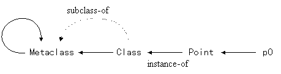

Public Members
Public MembersClass metaobjects are the most significant metaobjects of the MOP. Although other metaobjects only represent a structural aspect of the program, the class metaobjects not only represent such a structural aspect but also allow programmers to define a subclass and alter the behavior of the program.
The default class for the class metaobjects is Class,
which provides member functions for accessing the class definition.
To alter a behavioral aspect of the class, the programmer define
a subclass of Class that overrides virtual functions
controlling source-to-source translation involved with the class.
Public Members
 AllClasses()
AllClasses()
 AppendAfterStatement(Environment* e, Ptree* s)
AppendAfterStatement(Environment* e, Ptree* s)
AppendAfterToplevel(Environment* e, Class* c)
AppendAfterToplevel(Environment* e, Member& m)
AppendAfterToplevel(Environment* e, Ptree* s)
AppendBaseClass(Class* c, int specifier = Public,
bool is_virtual = false)
AppendBaseClass(Ptree* class_name, int specifier = Public,
bool is_virtual = false)
AppendBaseClass(char* class_name, int specifier = Public,
bool is_virtual = false)
AppendMember(Member& added_member,
int specifier = Public)
AppendMember(Ptree* text)
BaseClasses()
ChangeBaseClasses(Ptree* base_classes)
ChangeDefaultMetaclass(char* name)
ChangeMember(Member& changed_member)
ChangeName(Ptree* new_name)
Class()
Class(Environment* e, char* name)
Class(Environment* e, Ptree* name)
Definition()
ErrorMessage(Environment* env, char* message,
Ptree* code, Ptree* where)
FinalizeClass()
FinalizeInstance()
ImmediateSubclasses(ClassArray& result)
Initialize()
InitializeInstance(Ptree* definition, Ptree* meta_arg)
InsertBeforeStatement(Environment* e, Ptree* s)
InsertBeforeToplevel(Environment* e, Class* c)
InsertBeforeToplevel(Environment* e, Member& m)
InsertBeforeToplevel(Environment* e, Ptree* s)
InsertDeclaration(Environment* e, Ptree* d)
InsertDeclaration(Environment* e, Ptree* d,
Ptree* key, void* client_data)
InstancesOf(char* metaclas_name,
ClassArray& result)
IsImmediateSubclassOf(Ptree* class_name)
IsSubclassOf(Ptree* class_name)
LookupClientData(Environment* e, Ptree* key)
LookupCmdLineOption(char* option_name)
LookupCmdLineOption(char* key, char*& value)
LookupMember(Ptree* name, Member& m, int i = 0)
LookupMember(Ptree* name)
LookupMember(char* name, Member& m, int i = 0)
LookupMember(char* name)
Members()
MetaclassName()
Name()
NthBaseClass(int n)
NthBaseClassName(int n)
NthMember(int n, Member& m)
RegisterMetaclass(char* keyword, char* metaclass)
RegisterNewAccessSpecifier(char* keyword)
RegisterNewClosureStatement(char* keyword)
RegisterNewForStatement(char* keyword)
RegisterNewMemberModifier(char* keyword)
RegisterNewModifier(char* keyword)
RegisterNewWhileStatement(char* keyword)
RemoveBaseClasses()
RemoveClass()
RemoveMember(Member& removed_member)
Subclasses(ClassArray& result)
TranslateArguments(Environment* env, Ptree* args)
TranslateAssign(Environment* env, Ptree* object,
Ptree* assign_op, Ptree* expr)
TranslateBinary(Environment* env, Ptree* lexpr,
Ptree* binary_op, Ptree* rexpr)
TranslateClass(Environment* env)
TranslateDelete(Environment* env, Ptree* delete_op,
Ptree* object)
TranslateExpression(Environment* env, Ptree* expr)
TranslateExpression(Environment* env,
Ptree* expr, TypeInfo& t)
TranslateFunctionCall(Environment* env,
Ptree* object, Ptree* args)
TranslateInitializer(Environment* env, Ptree* var_name,
Ptree* expr)
TranslateMemberCall(Environment* env, Ptree* object,
Ptree* op, Ptree* member, Ptree* arglist)
TranslateMemberCall(Environment* env, Ptree* member,
Ptree* arglist)
TranslateMemberFunction(Environment* env, Member& m)
TranslateMemberRead(Environment* env, Ptree* object,
Ptree* op, Ptree* member)
TranslateMemberRead(Environment* env, Ptree* member)
TranslateMemberWrite(Environment* env, Ptree* object,
Ptree* op, Ptree* member, Ptree* assign_op, Ptree* expr)
TranslateMemberWrite(Environment* env, Ptree* member,
Ptree* assign_op, Ptree* expr)
TranslateNew(Environment* env, Ptree* header,
Ptree* new_op, Ptree* placement,
Ptree* type_name, Ptree* arglist)
TranslateNewType(Environment* env, Ptree* type_name)
TranslatePointer(Environment* env, Ptree* variable_name)
TranslatePostfix(Environment* env, Ptree* object,
Ptree* post_op)
TranslatePostfixOnMember(Environment* env, Ptree* object,
Ptree* op, Ptree* member,
Ptree* postfix_op)
TranslatePostfixOnMember(Environment* env, Ptree* member,
Ptree* postfix_op)
TranslateStaticUserStatement(Environment* env,
Ptree* keyword, Ptree* rest)
TranslateSubscript(Environment* env, Ptree* object,
Ptree* index)
TranslateUnary(Environment* env, Ptree* unary_op,
Ptree* object)
TranslateUnaryOnMember(Environment* env, Ptree* unary_op,
Ptree* object, Ptree* op,
Ptree* member)
TranslateUnaryOnMember(Environment* env, Ptree* unary_op,
Ptree* member)
TranslateUserStatement(Environment* env, Ptree* object,
Ptree* op, Ptree* keyword, Ptree* rest)
WarningMessage(Environment* env, char* message,
Ptree* name, Ptree* where)
In general, the class of a metaobject is selected
by the metaclass declaration
at the base level. For example:
metaclass PersistentClass Point;
declares that the metaclass for Point is PersistentClass.
This means that the compiler instantiates PersistentClass and
makes the instantiated object be the class metaobject representing Point. Since PersistentClass is a regular C++ class
but its instance is a class (metaobject), PersistentClass is
called ``metaclass''. This might look weird, but regard a class metaobject
as being identical to the class.
Programmers may specify a metaclass in a way other than
the metaclass declaration. The exact algorithm to select
a metaclass is as described below:
metaclass declaration.
Class is selected.
Programmers may specify a metaclass by a user-defined keyword. For example,
distribute class Dictionary { ... };
This means that the metaclass associated with the user-defined
keyword distribute is selected
for Dictionary.
If there is also a metaclass declaration for Dictionary, then
an error occurs.
Although the default metaclass is Class,
programmers can change it to another metaclass:
This changes the default metaclass to name.
It should be called by Initialize() defined
for a metaclass loaded by the -S option
at the beginning. Otherwise, that metaclass should be explicitly
loaded by the metaclass declaration, after which the new
default metaclass is effective.
ConstructorClass metaobjects may receive a meta argument when they are initialized. The meta argument is specified by programmers, for example, as follows:
metaclass PersistentClass Point("db", 5001);
The Ptree metaobject ["db" , 5001] is
a meta argument to the class metaobject for Point.
Also, the programmers may specify a meta argument in this syntax:
distribute("db", 5001) class Dictionary { ... };
The user-defined keyword distribute can lead a meta
argument. The class metaobject for Dictionary receives the
same meta argument that the class metaobject for Point
receives in the example above.
The member function InitializeInstance() on Class (and its subclasses) is responsible to
deal with the meta argument. By default, the meta argument
is simply ignored:
This constructor performs nothing. The initialization is performed
by InitializeInstance() invoked just after the constructor.
For this reason, the member functions supplied by Class are
not executable in the constructors of the subclasses of Class.
Note: only the OpenC++ compiler can call this constructor. The user programs should not call it.
void InitializeInstance(Ptree* definition, Ptree* meta_arg)
This is automatically invoked just after the constructor is invoked.
It initializes the data members of the class metaobject and
processes the meta arguments. definition is a Ptree metaobject representing
the class declaration. If a meta argument is not given, meta_arg is nil. This member function is not overridable; InitializeInstance() of the subclasses of Class must call
the base-class'es InitializeInstance() at
the beginning.
Note: This has been separeted from the constructor. Otherwise,
the constructor of Class would take two arguments and
thus all the metaclasses have to
have a constructor just for passing the arguments to the
constructor of Class.
Note: only the OpenC++ compiler can call this member function. The user programs should not call it.
Another constructor is provided for the programmers to produce a new class. This is an example of the use of this constructor:
void MyClass::TranslateClass(Environment* e)
{
Member m;
Class* c = new Class(e, "Bike");
LookupMember("move", m);
c->AppendMember(m);
AppendAfterToplevel(e, c);
}
A new class named Bike is created,
a member named move is retrieved from the class represented
by this class metaobject, and the retrieved member is copied to that new class.
The created class Bike is then inserted in the source code
after the declaration of the class represented by this class metaobject.
This constructor creates a class with the given name.
The created class has no member. If this constructor
is invoked, InitializeInstance() is not called. No subclass
of Class can inherit or invoke this constructor.
This constructor creates a class with the given name.
The created class has no member. If this constructor
is invoked, InitializeInstance() is not called. No subclass
of Class can inherit or invoke this constructor.
This inserts the class specified by the metaobject c just
before the toplevel declaration.
This appends the class specified by the metaobject c just
before the toplevel declaration.
Introspection
Since a class metaobject is the meta representation of a class,
programmers can access details of the class definition
through the class metaobject. The followings are member functions
on class metaobjects. The subclasses of Class cannot override
them.
This returns the name of the class.
This returns the base classes of the class. For example, if the class declaration is:
class C : public A, private B { ... };
Then, BaseClasses() returns a Ptree metaobject:
[: [public A] , [private B]]
This returns the body of the class declaration. It is a list
of member declarations. It does not include { and }.
This returns the Ptree metaobject representing
the whole class declaration.
This returns the name of the metaclass.
This returns the n-th (>= 0) base class.
This returns the name of the n-th (>= 0)
base class.
This returns true if the class is a subclass of class_name.
This returns true if the class is an immediate
subclass of class_name.
This returns true if the n-th (>= 0)
member, including data members and member functions, exists. The member metaobject representing the n-th member is
returned in m. If the class is a subclass, the member is
an inherited one from the base class.
This returns true if the member named name exists.
The member metaobject representing that member is
returned at m.
The member may be an inherited one.
If there are more than one members named name,
the i-th (>= 0) member is returned.
This returns true if the member named name exists.
The member may be an inherited one.
This returns true if the member named name exists.
The member metaobject representing that member is
returned at m.
The member may be an inherited one.
If there are more than one members named name,
the i-th (>= 0) member is returned.
This returns true if the member named name exists.
The member may be an inherited one.
Translation
Class metaobjects control source-to-source translation of the
program. Expressions involving a class are translated from OpenC++ to
C++ by a member function on the class metaobject.(In the
current version, the translated code is not recursively translated
again. So the metaobjects have to translate code from OpenC++ to C++
rather than from OpenC++ to (less-extended) OpenC++. This limitation
will be fixed in future.) Programmers may define a subclass
of Class to override such a member function to tailor
the translation.
The effective class metaobject that is actually responsible for the translation is the static type of the object involved by the expression. For example, suppose:
class Point { public: int x, y; };
class ColoredPoint : public Point { public: int color; };
:
Point* p = new ColoredPoint;
Then, an expression for data member read, p->x,
is translated by the class metaobject for Point because the variable p is a pointer to not ColoredPoint but Point. Although this might seem wrong design,
we believe that it is a reasonable way since only static type analysis
is available at compile time.
The class definition is translated by TranslateClass().
For example, if a member function f() is renamed g(),
the member function TranslateClass() should be overridden to be
this:
void MyClass::TranslateClass(Environment* e)
{
Member m;
LookupMember("f", m);
m.SetName(Ptree::Make("g"));
ChangeMember(m);
}
First, the member metaobject for f() is
obtained and the new
name g() is given to that member metaobject. Then, this change
is reflected on the class by ChangeMember().
The class Class provides several member functions, such as ChangeMember(), for translating a class definition.
Programmers can override TranslateClass() to call these functions and implement the translation
they want.
void TranslateClass(Environment* env)
This may call the member functions shown below and translate the declaration of the class.
--- Default implementation by Class
This performs nothing.
This removes the whole declaration of the class from the source code.
This changes the name of the class. Note that this member
function only substitutes new_name for the identifier following
the class keyword in the declaration. The constructors or
any other occurence of the class name are not changed.
This replaces the base-classes field of the class declaration
with the given base_class.
This removes the base classes from the class declaration. The class does not inherit other classes after the translation.
This appends a given class c to the list of the base classes. specifier is either Class::Public, Class::Protected, or Class::Private. If is_virtual is true,
then the appended base class is virtual.
This appends a given class named class_name to the list
of the base classes. specifier is either Class::Public, Class::Protected, or Class::Private. If is_virtual is true,
then the appended base class is virtual.
This appends a given class named class_name to the list
of the base classes. specifier is either Class::Public, Class::Protected, or Class::Private. If is_virtual is true,
then the appended base class is virtual.
This alter a member according to changed_member.
The member metaobject changed_member must be the object returned by LookupMember().
Note that the change of the member metaobject is not reflected until this
member function is called.
This removes the member specified by removed_member.
The member metaobject removed_member must be the object returned by LookupMember().
This appends a new member to the class. specifier is either Class::Public, Class::Protected, or Class::Private. This member function is used to append
a member similar to an existing one. For example, added_member may
be the object returned byLookupMember()and called SetName() on
to change the member name.
This inserts text after the member declarations in the
original class declaration. text can be not only a member declaration
but also a nested class declaration, an access specifier, and any kind of
program text.
The implementation of member functions is translated by TranslateMemberFunction().
For example,
void Point::Move(int rx, int ry)
{
x += rx;
y += ry;
}
To translate this function implementation, the compiler calls TranslateMemberFunction() on the class metaobject for Point.
The arguments are an environment and a member metaobject for Move(). If this member metaobject is changed
by member functions such as SetName(), the change is reflected on the
program. Unlike class declarations, no explicit function call for the reflection
is not needed. For example,
void MyClass::TranslateMemberFunction(Environment* env, Member& m)
{
m.SetFunctionBody(Ptree::Make("{}"));
}
This customizes the member function so that it has an empty body.
void TranslateMemberFunction(Environment* env, Member& m)
This translates the implementation of a member function specified by m.
The compiler does not call this function if the member function is inlined in the class
declaration. For example,
class Point {
public:
void Reset() { x = y = 0; }
void Move(int, int);
int x, y;
};
inline void Point::Move(int rx, int ry) { ... }
TranslateMemberFunction() is called only for Move().
The implementation of Reset() can be translated by TranslateClass().
Note that, even if the implementation of Move() is translated
by TranslateMemberFunction(), the member declaration of Move() in the
class declaration is not translated. It needs to be explicitly translated
in TranslateClass().
--- Default implementation by Class
This performs nothing.
This inserts the member function specified by m just
before the toplevel declaration. It should be used to insert the
implementation of a member function derived from the argument m of TranslateMemberFunction(). Note that AppendMember() only appends a member declaration in the class declaration.
This appends the member function specified by m just
before the toplevel declaration. It should be used to append the
implementation of a member function derived from the argument m of TranslateMemberFunction(). Note that AppendMember() only appends a member declaration in the class declaration.
Class metaobjects also control the translation of expressions.
An expressions, such as member calls, are translated by one of the
following virtual functions on the class metaobject involved
with the expression. For example, if the expression is a member call
on a Point object, it is translated by the class metaobject
for the Point class.
Ptree* TranslateInitializer(Environment* env, Ptree* var_name,
Ptree* expr)
This translates a variable initializer expr, which
would be [= expression] or [( [expression] )].
The two forms correspond to C++'s two different notations
for initialization. For example:
complex p(2.3, 4.0);
complex q = 0.0;
The initializers are [( [2.3 , 4.0] )] and [= 0.0], respectively.
The argument var_name indicates the name of the variable
initialized by expr.
--- Default implementation by Class
This translates expr by calling TranslateExpression() on the second element of expr.
Ptree* TranslateAssign(Environment* env, Ptree* object,
Ptree* assign_op, Ptree* expr)
This translates an assignment expression such as = and +=. object is an instance of the class, which
the value of expr is assigned to. assign_op is
an assignment operator. object and expr have not
been translated yet.
--- Default implementation by Class
This calls TranslateExpression() on object and expr and returns the translated expression.
Ptree* TranslateBinary(Environment* env, Ptree* lexpr,
Ptree* binary_op, Ptree* rexpr)
This translates a binary expression. binary_op is
the operator such as *, +, <<, ==, |, &&, and , (comma). lexpr and rexpr are the left-side expression
and the right-side expression. They have not been translated
yet. The class metaobject that this function is called on is
for the type of rexpr.
--- Default implementation by Class
This calls TranslateExpression() on lexpr and rexpr and returns the translated expression.
Ptree* TranslateUnary(Environment* env, Ptree* unary_op,
Ptree* object)
This translates a unary expression. unary_op is
the operator, which are either *, &, +, -, !, ~, ++, or --. sizeof is not included. object is an instance
of the class, which the operator is applied to. object has not been translated yet.
--- Default implementation by Class
This calls TranslateExpression() on object and returns the translated expression.
Ptree* TranslateSubscript(Environment* env, Ptree* object,
Ptree* index)
This translates a subscript expression (array access). object is an instance of the class, which the operator [] denoted by index is applied to. index is a list [\[ expression \]] . object and expr have not been translated yet.
--- Default implementation by Class
This calls TranslateExpression() on object and index and returns the translated expression.
Ptree* TranslatePostfix(Environment* env, Ptree* object,
Ptree* post_op)
This translates a postfix increment or decrement expression
(++ or --). object is an instance of the
class, which the operator post_op is applied to. object has not been translated yet.
--- Default implementation by Class
This calls TranslateExpression() on object and returns the translated expression.
Ptree* TranslateFunctionCall(Environment* env,
Ptree* object, Ptree* args)
This translates a function call expression on object.
Note that it is not for translating a member function call.
It is invoked to translate an application of
the call operator (). object is an instance of the
class. object and args have not been translated yet.
For example:
class Iterator { ... };
:
Iterator next;
while(p = next())
record(p);
TranslateFunctionCall() is called on the class metaobject
for Iterator to translate next().
In this case, object indicates next.
--- Default implementation by Class
This calls TranslateExpression() on object and TranslateArguments() on args ,
and returns the translated expression.
Ptree* TranslateNew(Environment* env, Ptree* header,
Ptree* new_op, Ptree* placement,
Ptree* type_name, Ptree* arglist)
This translates a new expression. header is
a user-defined keyword (type modifier), :: (if
the expression is ::new), or nil. new_op is the new operator. type_name may include an array size surrounded by []. arglist is arguments to the constructor. It includes
parentheses () . placement, type_name,
and arglist have not been translated yet.
--- Default implementation by Class
This calls TranslateArguments() on placement and arglist,
and TranslateNewType() on type_name.
Then it returns the translated expression.
Ptree* TranslateDelete(Environment* env, Ptree* delete_op,
Ptree* object)
This translates a delete expression on the object. delete_op is the delete operator. Note that this function is
not called on ::delete or delete [] expressions.
--- Default implementation by Class
This calls TranslateExpression() on the object and returns the translated expression.
Ptree* TranslateMemberRead(Environment* env, Ptree* object,
Ptree* op, Ptree* member)
This translates a member read expression on the object.
The operator op is . (dot) or ->. member specifies the member name. object has not been translated yet.
--- Default implementation by Class
This calls TranslateExpression() on the object and returns the translated expression.
Ptree* TranslateMemberRead(Environment* env, Ptree* member)
This translates a member read expression on the this object. That is, it is invoked if the object is not explicitly
specified.
--- Default implementation by Class
This returns member.
Ptree* TranslateMemberWrite(Environment* env, Ptree* object,
Ptree* op, Ptree* member, Ptree* assign_op, Ptree* expr)
This translates a member write expression on the object .
The operator op is . (dot) or ->. member specifies the member name. assign_op is an assign operator such as = and +=. expr specifies the right-hand expression of the assign operator. object and expr have not been translated yet.
--- Default implementation by Class
This calls TranslateExpression() on object and expr and returns the translated expression.
Ptree* TranslateMemberWrite(Environment* env, Ptree* member,
Ptree* assign_op, Ptree* expr)
This translates a member write expression on the this object. That is, it is invoked if the object is not explicitly
specified. member specifies the member name. assign_op is an assign operator such as = and += . expr specifies the right-hand expression of the assign operator. expr has not been translated yet.
--- Default implementation by Class
This calls TranslateExpression() on expr and returns the translated expression.
Ptree* TranslateMemberCall(Environment* env, Ptree* object,
Ptree* op, Ptree* member, Ptree* arglist)
This translates a member function call on the object.
The operator op is . (dot) or -> . member specifies the member name. arglist is arguments to the function. It includes
parentheses () . object and arglist have not been translated yet.
--- Default implementation by Class
This calls TranslateExpression() on object , and TranslateArguments() on arglist .
Then it returns the translated expression.
Ptree* TranslateMemberCall(Environment* env, Ptree* member,
Ptree* arglist)
This translates a member function call on the this object.
That is, it is invoked if the object is not explicitly specified. member specifies the member name. arglist is arguments to the function. It includes
parentheses () . arglist has not been translated yet.
--- Default implementation by Class
This calls TranslateArguments() on arglist and returns the translated expression.
Ptree* TranslateUnaryOnMember(Environment* env, Ptree* unary_op,
Ptree* object, Ptree* op,
Ptree* member)
This translates a unary operator applied to a member.
For example, if an expression is ++p->i, this member function
is called on the p's class. The argument unary_op is ++, object is p, op is ->, and member is i.
--- Default implementation by Class
This calls TranslateExpression() on object and returns the translated expression.
Ptree* TranslateUnaryOnMember(Environment* env, Ptree* unary_op,
Ptree* member)
This translates a unary operator applied to a member.
For example, if an expression is --iand i is a member,
this member function
is called on the the class for this object.
The argument unary_op is -- and member is i.
--- Default implementation by Class
This returns the given expression as is.
Ptree* TranslatePostfixOnMember(Environment* env, Ptree* object,
Ptree* op, Ptree* member,
Ptree* postfix_op)
This translates a postfix operator applied to a member.
For example, if an expression is p->i++, this member function
is called on the p's class. The argument object is p, op is ->, member is i, and postfix_op is ++.
--- Default implementation by Class
This calls TranslateExpression() on object and returns the translated expression.
Ptree* TranslatePostfixOnMember(Environment* env, Ptree* member,
Ptree* postfix_op)
This translates a postfix operator applied to a member.
For example, if an expression is i++and i is a member,
this member function
is called on the the class for this object.
The argument member is i and postfix_op is ++.
--- Default implementation by Class
This returns the given expression as is.
Ptree* TranslatePointer(Environment* env, Ptree* variable_name)
This translates occurrences of the pointer variables, such as this, indicating instances of this class. It translates those
variables even if they are the left values of assignment expressions.
Note that this function is also called on the target expression of
the -> operator from
within (the default) TranslateMemberCall() etc.
--- Default implementation by Class
This returns variable_name as is.
Ptree* TranslateUserStatement(Environment* env, Ptree* object,
Ptree* op, Ptree* keyword, Ptree* rest)
This translates a user-defined statement,
which is a while-style,
for-style, or closure statement. The first three elements
of the statement are specified by object, op,
and keyword. The rest of the statement, the () part
and the {} part, is specified by rest. For example:
matrix.forall(e) { e = 0.0; }
If forall is a user-defined keyword for the while-style
statement, object is matrix, op is . (dot), keyword is forall,
and rest is [( e ) [{ [[e = 0.0] ;] }]].
To recursively translate the {} part, TranslateExpression() should be called on the last element of rest, that is, rest->Last()->First(). If the statement is a closure statement,
the declared arguments are recorded in
the given environment env. Since the scope represented
by env is only within the statement, those declared arguments are
removed from env after this function is completed.
--- Default implementation by Class
This causes an error and returns nil.
Ptree* TranslateStaticUserStatement(Environment* env,
Ptree* keyword, Ptree* rest)
This translates a user-defined statement beginning with a class name such as:
Lambda::closure(int i) { return i + 1; }
Here, closure is a user-defined keyword.
The meaning of the arguments to this function is the same as that of TranslateUserStatement().
To recursively translate the {} part, TranslateExpression() should be called on the last
element of rest, that is, rest->Last()->First().
If the statement is a closure statement like the example above,
the declared arguments such as i are recorded in
the given environment env. Since the scope represented
by env is only within the statement, those declared arguments are
removed from env after this function is completed.
This member function
is named after that the syntax is similar
to one for static member function calls.
--- Default implementation by Class
This causes an error and returns nil.
The MOP does not allow programmers to customize array access or
pointer operations. Suppose that p is a pointer to a class A. Then the class metaobject for A cannot translate
expressions such as *p or p[3].
This design decision is based on C++'s one. For example,
C++'s operator overloading on [] does not change the meaning
of array access. It changes the meaning of the operator [] applied to not an array of objects but an object.
If the MOP allows programmers to customize array access and pointer
operations, they could implement an inconsistent extension.
For example, they want to translate an expression p[2] into p->get(2), where p is a pointer to a class X.
Then, what should this expression *(p + 2) be translated into?
Should the MOP regard it as an array access or a pointer dereference?
Because C++ provides strong pointer arithmetic,
designing an interface to consistently customize array access and
pointer operations is difficult.
The class Class also provides functions for translating
expressions and actual arguments. These functions are not overridden
but rather called by other functions shown above:
This translates an expression.
This translates an expression and stores its type in t.
This translates an actual-argument list.
This translates the type name included
in a new expression. If the created object is an array,
it calls TranslateExpression() on the expression specifying
the array size.
This is called by TranslateNew().
Registering Keywords
To make user-defined keywords available at the base level,
programmers must register the keywords by the static member functions on Class shown below.
Those member functions should be called
by Initialize().
This registers keyword as a new modifier. If this
appears in front of the new operator, the translation is performed by TranslateNew(). If it appears in front of
a function argument, then it is automatically eliminated after the
translation. Its existence can be inspected by GetUserArgumentModifiers() on
the member metaobject.
This registers keyword as a new member modifier.
It is automatically eliminated after the translation. Its existence
can be inspected by GetUserMemberModifier() on
the member metaobject.
This registers keyword as a new access specifier.
It is automatically eliminated after the translation. Its existence
can be inspected by GetUserAccessSpecifier() on
the member metaobject.
This registers keyword as a new while-style statement.
This registers keyword as a
new for-style statement.
This registers keyword as a new closure-style
statement.
This registers keyword as a new modifier
and associates it with metaclass.
If this keyword appears in front of a class declaration,
then metaclass is selected for the declared class.
The translation of the registered keyword for the while-,
the for-, or the closure-style statement is the responsibility
of the class metaobject. It is processed by TranslateUserStatement() and TranslateStaticUserStatement().
Initialization and FinalizationThe MOP provides functions to initialize and finalize class metaobjects:
This is a class initializer; it is invoked only
once on each metaclass (not on each class metaobject) right after
the compiler starts (if it is statically linked) or
the metaclass is dynamically loaded.
It returns true if the initialization succeeds.
The subclasses of Class may define their own Initialize() but they must not call their base
classes' Initialize().
--- Default implementation by Class
This does nothing except returning true.
Ptree* FinalizeInstance()
This is invoked on each class metaobject after all the
translation is finished. The returned Ptree object is inserted at
the end of the translated source file. This member function is not overridable; FinalizeInstance() of the subclasses of Class must call
the base-class'es FinalizeInstance() .
--- Default implementation by Class
This does nothing except returning nil.
This is invoked on each metaclass after all the
translation is finished if it exists. The returned Ptree object
is inserted at the end of the translated source file.
The subclasses of Class may define their own FinalizeClass() but they must not call their base
classes' FinalizeClass().
--- Default implementation by Class
This returns nil.
This is available only within FinalizeInstance().
It returns an array of all the classes appearing in the base-level program.
The returned array a is used as follows:
int n = a.Number(); // get the number of elements
Class* c = a[0]; // get the first element
Class* c2 = a.Ref(0); // same as a[0]
This is available only within FinalizeInstance().
It returns the number of all the subclasses of the class.
Those subclasses are also stored in result.
This is available only within FinalizeInstance().
It returns the number of all the immediate subclasses of the class.
Those subclasses are also stored in result.
The immediate subclass means only a child class but not a grand child.
This is available only within FinalizeInstance().
It returns the number of all the classes that are instances of
the metaclass specified by metaclass_name. Also those classes
are stored in result.
Inserting StatementsClass metaobjects can not only replace expressions but also insert statements into the translated source code:
This inserts the statement s just before the statement
currently translated.
This appends the statement s just after the statement
currently translated.
This inserts the statement s just before the toplevel
declaration, such as function definitions, that are currently translated.
This appends the statement s just after the toplevel
declaration, such as function definitions, that are currently translated.
This inserts the declaration statement d at the
beginning of the function body. For example,
1: void Point::Move(int new_x, int new_y)
2: {
3: x = new_x; y = new_y;
4: }
The declaration statement d is inserted between the
2nd line and the 3rd line.
This function returns true if the insertion succeeds.
This inserts the declaration statement d at the
beginning of the function body, and also records client_data with key. The recorded client data last while the
function body is translated.
This function returns true if no client data is recorded with key and the insertion succeeds.
This returns the client data associated with key. If the client data is not recorded, this function
returns nil.
Command Line Options
Class metaobjects can receive command line options. For example,
if the user specify the -M option:
% occ -Mclient -Mmode=tcp sample.cc
Then the class metaobjects can receive the command line
options client and mode (the value is tcp) by the following functions:
This returns true if the option specified
by option_name is given from the command line.
This returns true if the option specified
by option_name is given from the command line. The value of
the option is stored in value. If the option value is not
given, value is nil.
Error MessageThe following functions reports an error that occurs during the source-to-source translation.
This prints an error message.
For example, message is "wrong type:" and code is a Ptree metaobject
representing Point, then the printed messages is something
like this:
sample.cc:25: wrong type: Point
The file name and the line number point to the location of the
code specified by where. If where is nil,
no file name or line number are not printed.
The first argument env can be omitted. In this case, the printed
line number may be wrong.
This prints a warning message. The meaning of the arguments
are the same as ErrorMessage(). The first argument env can
be omitted.
Metaclass for Class
Since OpenC++ is a self-reflective language,
the meta-level programs are also in OpenC++.
They must be compiled by the OpenC++ compiler.
Because of this self-reflection, metaclasses also have their metaclasses.
The metaclass for Class and its subclasses must
be Metaclass.
However, programmers do not have to explicitly declare the metaclass for
their metaclasses because
the subclasses of Class inherit the metaclass
from Class.
Metaclass makes it easy to define a subclass
of Class.
It automatically inserts the definition of MetaclassName() of that subclass and also generates house-keeping code internally used by
the compiler.
Since Metaclass is a subclass of Class,
its metaclass is Metaclass itself.
